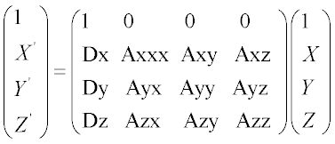

Techniques for ASAP input include: radian angle entries, relative and literal referencing, direction vectors, and linear transformations.
Angle entries that by default are in radians (that is, the PARABASAL divergence, ROUGHNESS RANDOM slope, and INTERFACE RMS/BSDF back cone angle) can also be entered in degrees by appending a "D" to the end of the number. For example, the following two entries are equivalent:
2.5D 2.5/57.29578 radians
If the entry is a direction cosine coordinate (CLIP DIR or SPOTS/SPREAD DIR window), the result is the sine of the angle; for example:
2.5D SIN(2.5/57.29578)
Alternate schemes are available when referencing surface/edge/lens, media, object, ray or source numbers within commands. Instead of using the actual absolute number, you can specify a number relative to the largest number defined by using a decimal entry of the form ".i" where i is an integer between 1 and 9999 inclusive. ".i" is equivalent the 1 plus largest number defined, minus i.
| Referencing Method | Format | Description |
| Absolute | n | actual entity number |
| Relative | .i | max+1-i |
| Literal | name | exact or abbreviation |
Some examples of relative indexing are:
| .2 | next to the largest number defined so far |
| -.1 | negative of the largest number defined |
Also, for most commands that require the specification of a particular object, media or coating, the name can be used in place of directly specifying the number or using the relative indexing described above. ASAP first attempts an exact match (ignoring blanks). Otherwise, the characters in an abbreviation must be present in the same order as in original object, media or coating name but not necessarily consecutive; that is, any number of original characters can be skipped to make the abbreviation small enough but unique. An underscore "_" in a literal media reference always requires an exact match and is also used to separate the catalog name (file with extension CAT) from the glass name; for example, "SCHOTT_BK7".
Linear transformations change the scaling or orientation of a
geometrical entity (surface, edge, lens, object, group, and rays) by applying a
general 4-by-4 linear transformation matrix to it. Any number of the following
elementary operations can be applied after any entity definition to build up
the final matrix. The order in which these operations are entered into the
input stream is exactly the order in which they will be applied to the entity.
These commands must be grouped together following an entity definition with no
other commands between them (except for a comment). The LIST option causes the
resulting 4-by-4 transformation matrix to be printed and decoded into simple
operations if possible. A general transformation for a position vector (X,Y,Z)
has the form:
